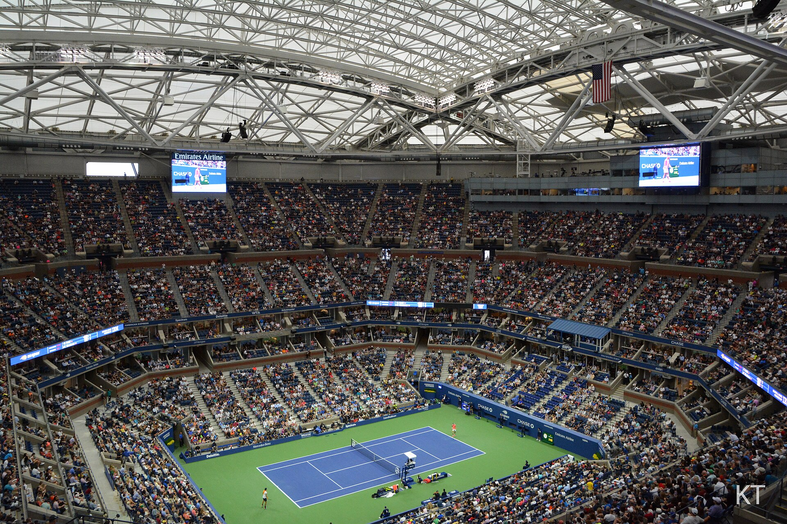

O US Open ocupa uma posição única entre os quatro Grand Slams do tênis. É o último major da temporada e também aquele cuja identidade mais se mistura com a cidade que o recebe. Em Flushing Meadows, no Queens, partidas atravessam a noite, arquibancadas participam intensamente dos jogos e o Arthur Ashe Stadium funciona como o grande palco de um torneio que aprendeu a combinar história e espetáculo.
Essa identidade, porém, foi construída ao longo de mais de um século. Antes das quadras duras de Nova York, o campeonato passou pela grama e pelo saibro verde. Antes do enorme complexo atual, teve como casa Newport e Forest Hills.
A trajetória ajuda a explicar por que o torneio norte-americano ocupa um espaço tão importante na história do tênis.
Como nasceu o US Open
A primeira edição do campeonato masculino foi realizada em 1881, em Newport, Rhode Island. Naquele período, o torneio ainda era conhecido como U.S. National Championships e fazia parte de uma realidade, obviamente, muito diferente da estrutura profissional que existe atualmente.
A competição feminina começou em 1887. Ellen Hansell venceu a primeira edição de simples das mulheres, iniciando uma história que mais tarde teria campeãs como Helen Wills, Chris Evert, Martina Navratilova, Steffi Graf, Serena Williams e tantas outras referências do esporte.
Durante décadas, o campeonato permaneceu restrito ao modelo amador. A grande transformação ocorreu em 1968, quando profissionais e amadores passaram a competir no mesmo torneio. Foi o nascimento do US Open dentro da Era Aberta.
Arthur Ashe venceu a chave masculina daquele primeiro torneio da nova era ao derrotar Tom Okker na final. Como Ashe ainda mantinha condição de amador, não pôde receber a premiação destinada ao campeão profissional, um episódio que ilustra o tamanho da transição vivida pelo tênis naquele período.
De Newport a Forest Hills e Flushing Meadows
A geografia do US Open também mudou bastante.
O torneio masculino começou em Newport, onde permaneceu por 34 anos. Depois, Forest Hills, em Nova York, tornou-se sua sede mais associada ao período anterior à estrutura atual. Houve ainda edições realizadas na Filadélfia antes de o campeonato retornar a Forest Hills.
A mudança definitiva aconteceu em 1978, quando o US Open deixou o West Side Tennis Club e foi transferido para o então USTA National Tennis Center, em Flushing Meadows. O complexo seria posteriormente rebatizado como USTA Billie Jean King National Tennis Center.
A transferência não representou apenas uma troca de endereço. Ela acompanhou o crescimento do tênis profissional e permitiu que o torneio recebesse públicos maiores, ampliasse sua estrutura e assumisse cada vez mais a dimensão de um grande evento esportivo internacional.
Hoje, o Arthur Ashe Stadium é o principal símbolo dessa estrutura. A arena foi inaugurada em 1997 e possui capacidade de 23.771 espectadores, sendo reconhecida pela USTA como o maior estádio de tênis do mundo. Desde 2016, conta também com teto retrátil.
O único Grand Slam disputado em três superfícies
Uma das características mais fascinantes da história do US Open é sua relação com os diferentes pisos.
O campeonato foi disputado na grama até 1974. Entre 1975 e 1977, passou para o Har-Tru, conhecido como saibro verde. A partir da mudança para Flushing Meadows, em 1978, adotou a quadra dura. Dessa forma, tornou-se o único Grand Slam que já teve partidas disputadas nas três principais superfícies do tênis outdoor.
Esse período produziu também um recorde que permanece singular.
Jimmy Connors conquistou o US Open de 1974 na grama, venceu novamente em 1976 no saibro verde e levantou a taça de 1978 já nas quadras duras de Flushing Meadows. Ele é o único jogador, entre homens e mulheres, campeão de simples do torneio nas três superfícies.
Outra mudança importante ocorreu em 2020, quando a Laykold passou a fornecer a superfície das quadras do US Open, substituindo o sistema utilizado anteriormente.
Igualdade de premiação e as noites de Nova York
O peso histórico do US Open não vem apenas de seus campeões.
Em 1973, o torneio tornou-se o primeiro dos quatro Grand Slams a oferecer premiação igual para homens e mulheres. A mudança teve forte participação de Billie Jean King e marcou um momento decisivo na luta pela igualdade de premiação no tênis profissional.
Dois anos depois, outra característica que se tornaria parte essencial do evento apareceu pela primeira vez.
Em 1975, ainda em Forest Hills, o US Open introduziu partidas noturnas. Foi a estreia do tênis sob luzes artificiais em um Grand Slam. A iniciativa permitiu ampliar o público e acabou criando uma das tradições mais reconhecidas do torneio.
Décadas depois, as chamadas night sessions continuam entre as imagens mais associadas ao US Open. Partidas importantes disputadas diante de mais de 20 mil pessoas no Arthur Ashe Stadium transformaram a noite nova-iorquina em parte da experiência do campeonato.
Maiores campeões em simples
A longa história da competição exige uma divisão importante entre os recordes gerais — que incluem o antigo U.S. National Championships — e os números registrados a partir do início da Era Aberta, em 1968.
Considerando toda a história do torneio, estes são os tenistas que mais conquistaram o torneio de simples.
Masculino:
- Richard Sears — 7 títulos
- Bill Larned — 7 títulos
- Bill Tilden — 7 títulos
- Jimmy Connors — 5 títulos
- Pete Sampras — 5 títulos
- Roger Federer — 5 títulos
- Robert Wrenn — 4 títulos
- John McEnroe — 4 títulos
- Rafael Nadal— 4 títulos
- Novak Djokovic — 4 títulos
A divisão por eras ajuda a dimensionar esses números. Sears, Larned e Tilden construíram seus recordes antes da Era Aberta, enquanto Connors, Sampras e Federer dividem a liderança masculina desde 1968, com cinco conquistas cada.
Feminino:
- Molla Bjurstedt Mallory — 8 títulos
- Helen Wills — 7 títulos
- Chris Evert — 6 títulos
- Serena Williams — 6 títulos
- Margaret Court — 5 títulos
- Steffi Graf — 5 títulos
- Elisabeth Moore — 4 títulos
- Hazel Hotchkiss Wightman — 4 títulos
- Helen Jacobs — 4 títulos
- Alice Marble — 4 títulos
- Pauline Betz — 4 títulos
- Maria Bueno — 4 títulos
- Billie Jean King — 4 títulos
- Martina Navratilova — 4 títulos
Molla Bjurstedt Mallory permanece como a maior campeã de simples da história do torneio, com oito títulos. Na Era Aberta, iniciada em 1968, Chris Evert e Serena Williams dividem o recorde feminino, com seis conquistas cada.
Os atuais campeões
A edição de 2026 adicionou dois novos nomes à lista de campeões de simples.
No masculino, Alexander Zverev conquistou seu primeiro título do US Open ao derrotar o norte-americano Ben Shelton. O alemão chegou ao troféu seis anos depois de ter sido vice-campeão em Nova York, em 2020.
No feminino, Elena Rybakina também foi campeã do US Open pela primeira vez. Ela superou Aryna Sabalenka, vencedora das edições de 2024 e 2025. O resultado impediu o terceiro título consecutivo da bielorrussa e deu a Rybakina sua primeira taça em Flushing Meadows.
A particularidade entre os outros Grand Slams
Os quatro maiores torneios do tênis compartilham o mesmo status de Grand Slam, mas desenvolveram identidades muito diferentes.
O Australian Open abre a temporada de majors. Roland Garros é definido pelo saibro e pelas exigências particulares da superfície. O Wimbledon permanece como grande símbolo da tradição e do tênis na grama.
O US Open fecha essa sequência com uma personalidade construída em torno de Nova York.
O barulho das arquibancadas, as sessões noturnas, o tamanho do Arthur Ashe Stadium, as quadras duras e a atmosfera de Flushing Meadows fazem com que o torneio tenha características próprias até mesmo dentro do grupo mais importante do calendário.
Um torneio que ajuda a explicar a evolução do tênis
Poucos campeonatos permitem enxergar tantas transformações do esporte em uma única linha histórica.
O US Open começou no século 19, quando o tênis competitivo tinha dimensões muito menores. Passou pela separação entre amadores e profissionais, entrou na Era Aberta em 1968, foi pioneiro na igualdade de premiação em 1973, colocou o tênis de Grand Slam sob as luzes em 1975, mudou de sede e de piso em 1978 e continuou modernizando sua estrutura nas décadas seguintes.
Ao mesmo tempo, suas quadras receberam algumas das maiores figuras que o esporte já produziu.
De Bill Tilden e Molla Mallory a Jimmy Connors e Chris Evert; de Pete Sampras e Serena Williams a Roger Federer, Novak Djokovic e campeões das gerações mais recentes, o torneio atravessou épocas sem perder relevância.
É justamente essa combinação que transforma o US Open em muito mais do que o Grand Slam que encerra a temporada. Nova York reúne em duas semanas diferentes fases da história do tênis: a tradição de um campeonato iniciado em 1881, a dimensão global construída na Era Aberta e o espetáculo moderno de um torneio que continua se reinventando mais de 140 anos depois de sua primeira edição.